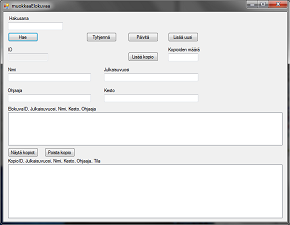
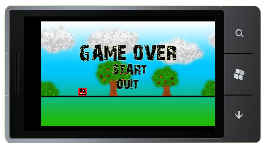

Videovuokraamo oli projekti, jonka toteutimme Microsoft Visual Studio ohjelmalla. Tarkoitus oli siis luoda ohjelma, jolla pystyisi ylläpitämään videovuokraamoa. Ohjelmalla oli tarkoitus mahdollistaa elokuvien muokkaus, lisäys ja poisto, sekä asiakastietojen hallinnointi. Tietysti ohjelmalla oli tarkoitus myös mahdollistaa kirjanpito elokuvien vuokrauksesta, sekä palautuksesta. Valitettavasti kurssin pituus rajoitti ohjelmamme toteutuksen siihen, että ehtisimme tekemään vain elokuvien lisäyksen, poiston ja muokkauksen. Sekin tosin jäi puutteelliseksi.Ohjelmassa käytimme tietokantaa, jonka loimme Access:lla. Tietokanta tosin on tehty vain ohjelman testausta varten ja tämän vuoksi myös hieman suppea. Ohjelma oli vain yksi kurssin projekteista ja ei siis missään nimessä tarkoitettu oikeaan käyttöön. Voit ladata ohjelman, tai katsoa lisää kuvamateriaalia täältä
Mobiiliohjelmoinnin kurssi oli ns. pioneerikurssi. Kurssilla oli tarkoitus tehdä peli Windows Phonelle. Ohjelma tehtiin Visual Studio ohjelmalla. Kielenä käytettiin C#. Kurssi oli siis testikurssi ja kesti vain reilun kuukauden, joten mistään mobiilimaailmaa mullistavasta pelistä ei siis ole kyse. Voit ladata pelin, tai katsoa kuvamateriaalia täältä.
Java-kursseihin ei sisältynyt mitään varsinaista projektia, vaan kurssit koostui lähinnä harjoituksista. Harjoitukset toimivat lähinnä tehtävät käteen periaatteella. Omatoimisella opiskelulla sitten tein harjoitukset valmiiksi ennen koetta. Omaa tasoani java-ohjelmoinnissa on vaikea sanoa. Kaksi kurssia on kuitenkin javaa takana, tosin sillä ei nyt viellä kauheasti pääse kehumaan, mutta pohja java-ohjelmoinnille on luotu. Nyt näyttää kuitenkin siltä, että java-ohjelmointi koulussa jää kahteen kurssiin, sillä tietääkseni sen opettaminen koulussani lopetettiin. Voit katsoa screenshot:n eclipse ohjelmasta tästä. Kuvasta voi toivottavasti arvioida edes hieman osaamistani.
Harjoitusyritys logo. Kuvankäsittely. 3D mallinnus. Kuvataide.
CCNA1 Sertificaatti.pdf CV.doc Harjoittelutodistus. Opintosuoritusote.

{kind=link}
{kind=link}
{kind=link}
{kind=link}
{kind=link}